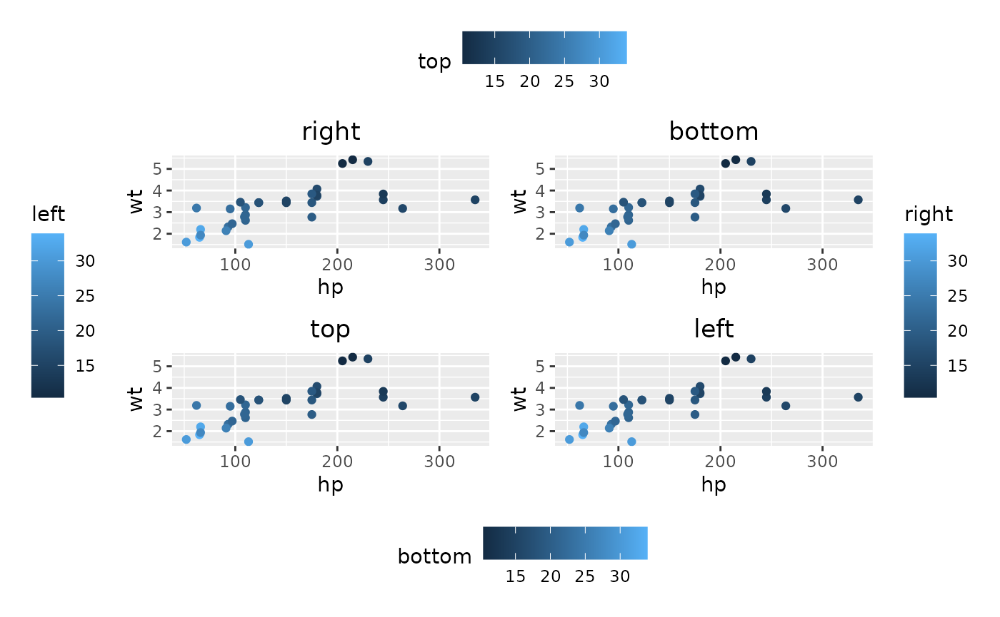
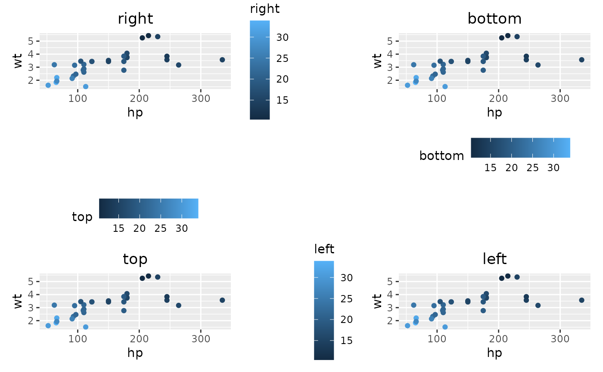

align_plots
Special thanks to the patchwork project—many core codes
of the plot composer process were adapted from patchwork.
We have added new features to better implement ggalign’s
layout functions (ggheatmap() and ggstack()),
including:
These features have not been pushed to patchwork because
they required significant modification of core code. We attempted to
merge them, but the author of patchwork decided to
implement some of these features independently. The latest version of
patchwork now includes free_align(),
free_lab(), and free_space() functionality
under a single function: patchwork::free(). For more
details, see: https://www.tidyverse.org/blog/2024/09/patchwork-1-3-0/.
The plot composer function in ggalign is
align_plots(), which behaves similarly to
cowplot::align_plots() and
patchwork::wrap_plots().
Guide legends
By default, align_plots() won’t collect any guide
legends. You can use the guides argument to control which
side of the guide legends should be collected. They will be collected to
their original side. Here, we use patch_titles() to
indicate the guide legend position (instead of using
ggtitle()). patch_titles() can add titles on
four sides, and the title will be placed between the plot panel and the
guide legend.
p_right <- ggplot(mtcars) +
geom_point(aes(hp, wt, colour = mpg)) +
patch_titles("right") +
labs(color = "right")
p_top <- p_right +
patch_titles("top") +
scale_color_continuous(
name = "top",
guide = guide_colorbar(position = "top")
)
p_left <- p_right +
patch_titles("left") +
scale_color_continuous(
name = "left",
guide = guide_colorbar(position = "left")
)
p_bottom <- p_right +
patch_titles("bottom") +
scale_color_continuous(
name = "bottom",
guide = guide_colorbar(position = "bottom")
)
align_plots(p_right, p_bottom, p_top, p_left, guides = "tlbr")
If align_plots() is nested in another
align_plots(), the nested align_plots() will
inherit the guides argument from the upper-level
align_plots(). And the top-level align_plots()
won’t collect guide legends from plots within the nested
align_plots() unless the nested align_plots()
collects them first.
free_guide
The free_guide() function allows you to override the
guides argument for a single plot.
align_plots(
free_guide(p_right, NULL),
free_guide(p_bottom, NULL),
free_guide(p_top, NULL),
free_guide(p_left, NULL),
guides = "tlbr"
)
You can also specify which guide positions to be collected for individual plots.
align_plots(
free_guide(p_right, "r"),
free_guide(p_bottom, "b"),
free_guide(p_top, "t"),
free_guide(p_left, "l")
)
Session information
sessionInfo()
#> R version 4.4.1 (2024-06-14)
#> Platform: x86_64-pc-linux-gnu
#> Running under: Ubuntu 22.04.5 LTS
#>
#> Matrix products: default
#> BLAS: /usr/lib/x86_64-linux-gnu/openblas-pthread/libblas.so.3
#> LAPACK: /usr/lib/x86_64-linux-gnu/openblas-pthread/libopenblasp-r0.3.20.so; LAPACK version 3.10.0
#>
#> locale:
#> [1] LC_CTYPE=C.UTF-8 LC_NUMERIC=C LC_TIME=C.UTF-8
#> [4] LC_COLLATE=C.UTF-8 LC_MONETARY=C.UTF-8 LC_MESSAGES=C.UTF-8
#> [7] LC_PAPER=C.UTF-8 LC_NAME=C LC_ADDRESS=C
#> [10] LC_TELEPHONE=C LC_MEASUREMENT=C.UTF-8 LC_IDENTIFICATION=C
#>
#> time zone: UTC
#> tzcode source: system (glibc)
#>
#> attached base packages:
#> [1] stats graphics grDevices utils datasets methods base
#>
#> other attached packages:
#> [1] ggalign_0.0.4.9000 ggplot2_3.5.1
#>
#> loaded via a namespace (and not attached):
#> [1] gtable_0.3.5 jsonlite_1.8.9 highr_0.11 dplyr_1.1.4
#> [5] compiler_4.4.1 tidyselect_1.2.1 jquerylib_0.1.4 systemfonts_1.1.0
#> [9] scales_1.3.0 textshaping_0.4.0 yaml_2.3.10 fastmap_1.2.0
#> [13] R6_2.5.1 labeling_0.4.3 generics_0.1.3 knitr_1.48
#> [17] tibble_3.2.1 desc_1.4.3 munsell_0.5.1 bslib_0.8.0
#> [21] pillar_1.9.0 rlang_1.1.4 utf8_1.2.4 cachem_1.1.0
#> [25] xfun_0.48 fs_1.6.4 sass_0.4.9 cli_3.6.3
#> [29] pkgdown_2.1.1 withr_3.0.1 magrittr_2.0.3 digest_0.6.37
#> [33] grid_4.4.1 lifecycle_1.0.4 vctrs_0.6.5 evaluate_1.0.1
#> [37] glue_1.8.0 data.table_1.16.2 farver_2.1.2 ragg_1.3.3
#> [41] fansi_1.0.6 colorspace_2.1-1 rmarkdown_2.28 tools_4.4.1
#> [45] pkgconfig_2.0.3 htmltools_0.5.8.1